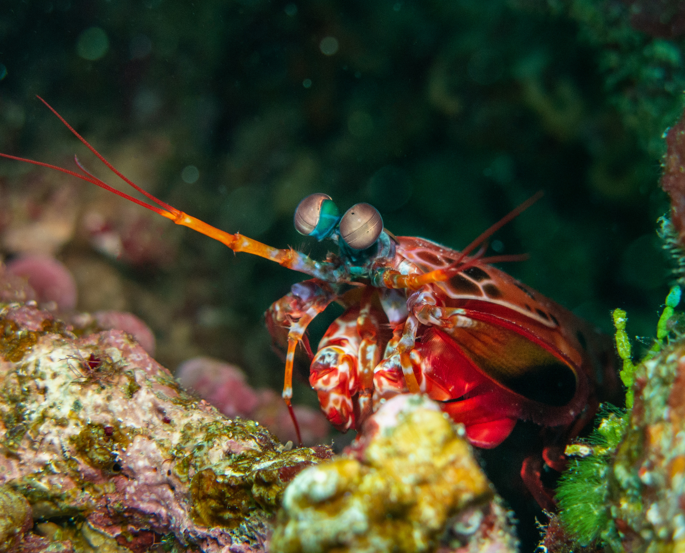

Apenas mais um crustáceo ou um verdadeiro Mike Tyson dos mares?
Apenas mais um crustáceo ou um verdadeiro Mike Tyson dos mares?
Fatos sobre o Stomatopoda
-
Reino
Animalia
-
Filo
Arthropoda
-
Subfilo
Crustacea
-
Classe
Malacostraca
-
Subclasse
Hoplocarida
-
Ordem
Stomatopoda
-
Nome Científico
Odontodactylus scyllarus
Stomatopoda (ou estomatópode), chamados popularmente de tamarutacas ou de lacraias-do-mar no Brasil, é uma ordem de crustáceos marinhos da subclasse Hoplocarida, que agrupa cerca de 400 espécies, caracterizadas principalmente pela morfologia da segunda pata torácica, que é modificada em apêndice subquelado, lembrando uma pata de louva-a-deus.

Fonte: biodiversity4all.org